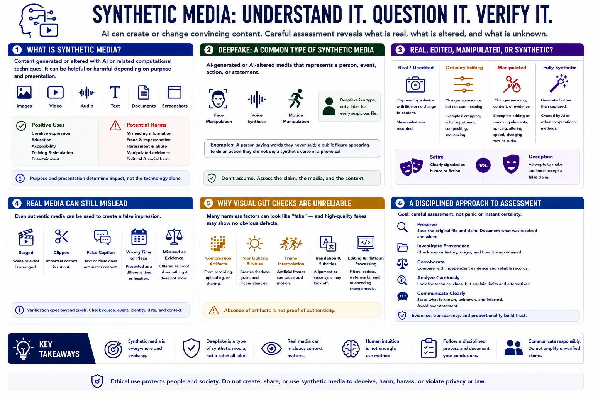

What Are Deepfakes and Synthetic Media?
Connecting to LMS... Progress: in progress

Narration
Synthetic media is content generated or altered with artificial intelligence or related computational techniques. It can include images, video, audio, text, documents, and screenshots. Synthetic content may be creative, educational, assistive, misleading, or harmful depending on purpose and presentation.
A deepfake is AI-generated or AI-altered media that represents a person, event, action, or statement. The term often describes face, voice, or motion manipulation, but analysts should avoid using it as a label for every suspicious file.
Ordinary editing changes real media through cropping, color adjustment, compositing, or sequencing. Manipulation changes meaning or evidence. Fully synthetic media is generated rather than captured. Satire may be clearly signaled, while deception attempts to make an audience accept a false claim.
Real media can also mislead when staged, clipped, given a false caption, or presented as evidence of a different time or place. Verification therefore asks more than whether pixels were generated. It asks whether the claimed source, event, identity, date, and context are supported.
Analysts need careful habits because intuitive visual judgment is unreliable. Compression, poor lighting, frame interpolation, translation, editing, and platform processing can resemble synthetic artifacts. High-quality generation may show no obvious defect.
The objective is disciplined assessment, not panic or instant certainty. Preserve the media and claim, investigate provenance, compare independent evidence, describe technical clues cautiously, and communicate what is known, unknown, and inferred.